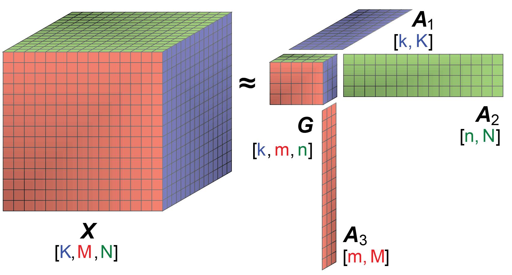
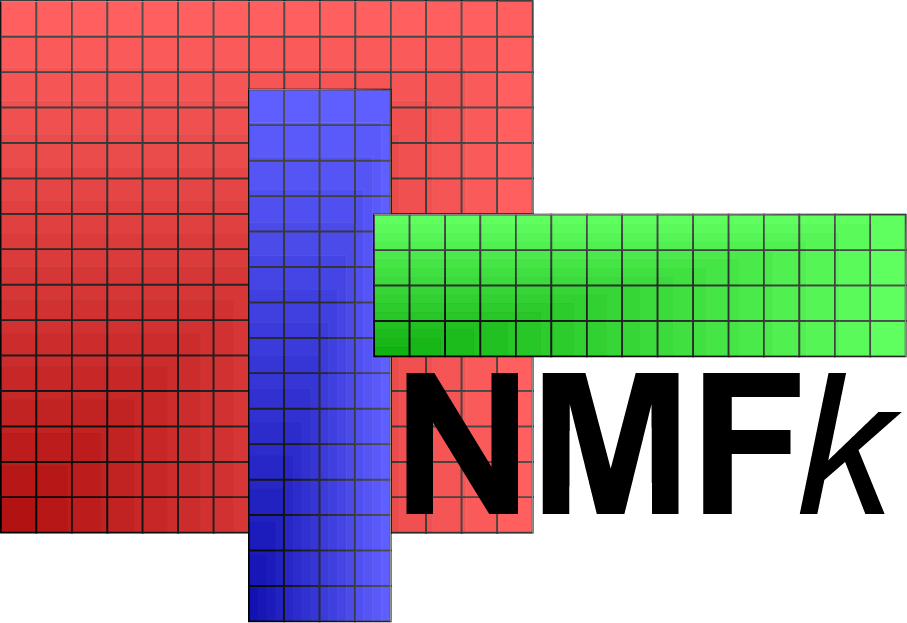
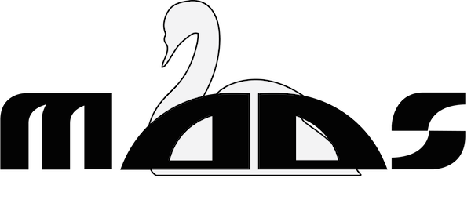

Research
-
Machine Learning
Unsupervised Machine Learning methods are powerful data-analytics tools capable of extracting important features hidden (latent) in large datasets without any prior information. The physical interpretation of the extracted features is done a posteriori by subject-matter experts.
In contrast, supervised Machine Learning methods are trained based on large labeled datasets The labeling is performed a priori by subject-matter experts. The process of deep Machine Learning commonly includes both unsupervised and supervised techniques LeCun, Bengio, and Hinton 2015 where unsupervised Machine Learning are applied to facilitate the process of data labeling.
The integration of large datasets, powerful computational capabilities, and affordable data storage has resulted in the widespread use of Machine Learning in science, technology, and industry.
Recently we have developed a novel unsupervised Machine Learning methods. The methods are based on Matrix/Tensor Decomposition (Factorization) coupled with sparsity and nonnegativity constraints. The method reveals the temporal and spatial footprints of the extracted features.
Tensor Decomposition
A novel unsupervised Machine Learning based on Tensor Decomposition coupled with sparsity and nonnegativity constraints has been applied to extract the temporal and spatial footprints of the features in multi-dimensional datasets in the form of multi-way arrays or tensors. The decomposition (factorization) of a given tensor \(X\) is typically performed by minimization of the Frobenius norm:
$$ \frac{1}{2} ||X-G \otimes_1 A_1 \otimes_2 A_2 \dots \otimes_n A_n ||_F^2 $$
where:
- \(n\) is the dimensionality of the tensor \(X\)
- \(G\) is a "mixing" core tensor
- \(A_1,A_2,\dots,A_n\) are "feature” factors (in the form of vectors or matrices)
- \(\otimes\) is a tensor product applied to fold-in factors \(A_1,A_2,\dots,A_n\) in each of the tensor dimensions
The product \(G \otimes_1 A_1 \otimes_2 A_2 \dots \otimes_n A_n\) is an estimate of \(X\) (\(X_{est}\)).
The reconstruction error \(X - X_{est}\) is expected to be random uncorrelated noise.
\(G\) is a \(n\)-dimensional tensor with a size and a rank lower than the size and the rank of \(X\). The size of tensor \(G\) defines the number of extracted features (signals) in each of the tensor dimensions.
The factor matrices \(A_1,A_2,\dots,A_n\) represent the extracted features (signals) in each of the tensor dimensions. The number of matrix columns equals the number of features in the respective tensor dimensions (if there is only 1 column, the particular factor is a vector). The number of matrix rows in each factor (matrix) \(A_i\) equals the size of tensor X in the respective dimensions.
The elements of tensor \(G\) define how the features along each dimension (\(A_1,A_2,\dots,A_n\)) are mixed to represent the original tensor \(X\).
The Tensor Decomposition is commonly performed using Candecomp/Parafac (CP) or Tucker decomposition models.
Some of the decomposition models can theoretically lead to unique solutions under specific, albeit rarely satisfied, noiseless conditions. When these conditions are not satisfied, additional minimization constraints can assist the factorization.
A popular approach is to add sparsity and nonnegative constraints. Sparsity constraints on the elements of G reduce the number of features and their mixing (by having as many zero entries as possible). Nonnegativity enforces parts-based representation of the original data which also allows the Tensor Decomposition results for \(G\) and \(A_1,A_2,\dots,A_n\) to be easily interrelated Cichocki et al, 2009.
Algorithms called NMFk and NTFk for Matrix/Tensor Factorization (Decomposition) coupled with sparsity and nonnegativity constraints custom k-means clustering has been developed in Julia
NMFk and NTFk codes are available as open-source on GitHub.

Research Papers
- Vesselinov, V.V., Mudunuru, M., Karra, S., O'Malley, D., Alexandrov, B.S., Unsupervised Machine Learning Based on Non-Negative Tensor Factorization for Analyzing Reactive-Mixing, 10.1016/j.jcp.2019.05.039, Journal of Computational Physics, 2019. PDF
- Vesselinov, V.V., Alexandrov, B.S., O'Malley, D., Nonnegative Tensor Factorization for Contaminant Source Identification, Journal of Contaminant Hydrology, 10.1016/j.jconhyd.2018.11.010, 2018. PDF
- O'Malley, D., Vesselinov, V.V., Alexandrov, B.S., Alexandrov, L.B., Nonnegative/binary matrix factorization with a D-Wave quantum annealer, PlosOne, 10.1371/journal.pone.0206653, 2018. PDF
- Stanev, V., Vesselinov, V.V., Kusne, A.G., Antoszewski, G., Takeuchi,I., Alexandrov, B.A., Unsupervised Phase Mapping of X-ray Diffraction Data by Nonnegative Matrix Factorization Integrated with Custom Clustering, Nature Computational Materials, 10.1038/s41524-018-0099-2, 2018. PDF
- Iliev, F.L., Stanev, V.G., Vesselinov, V.V., Alexandrov, B.S., Nonnegative Matrix Factorization for identification of unknown number of sources emitting delayed signals PLoS ONE, 10.1371/journal.pone.0193974. 2018. PDF
- Stanev, V.G., Iliev, F.L., Hansen, S.K., Vesselinov, V.V., Alexandrov, B.S., Identification of the release sources in advection-diffusion system by machine learning combined with Green function inverse method, Applied Mathematical Modelling, 10.1016/j.apm.2018.03.006, 2018. PDF
- Vesselinov, V.V., O'Malley, D., Alexandrov, B.S., Contaminant source identification using semi-supervised machine learning, Journal of Contaminant Hydrology, 10.1016/j.jconhyd.2017.11.002, 2017. PDF
- Alexandrov, B., Vesselinov, V.V., Blind source separation for groundwater level analysis based on non-negative matrix factorization, Water Resources Research, 10.1002/2013WR015037, 2014. PDF
Presentations
- Vesselinov, V.V., Novel Machine Learning Methods for Extraction of Features Characterizing Datasets and Models, AGU Fall meeting, Washington D.C., 2018. PDF
- Vesselinov, V.V., Novel Machine Learning Methods for Extraction of Features Characterizing Complex Datasets and Models, Recent Advances in Machine Learning and Computational Methods for Geoscience, Institute for Mathematics and its Applications, University of Minnesota, 2018. PDF
- O'Malley, D., Vesselinov, V.V., Alexandrov, B.S., Alexandrov, L.B., Nonnegative/binary matrix factorization with a D-Wave quantum annealer PDF
- Vesselinov, V.V., Alexandrov, B.A, Model-free Source Identification, AGU Fall Meeting, San Francisco, CA, 2014. PDF
Presentations are also available at slideshare.net
Videos
Examples
-
Model Analysis
